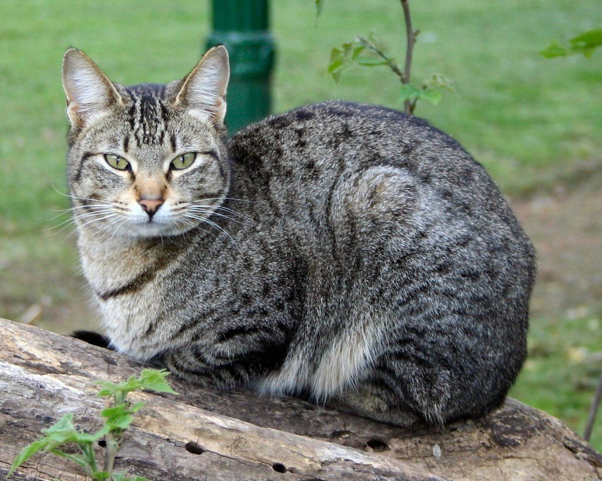

Olá,mundo!
esse é meu primeiro site.
este projeto demostra interatividade com HTML,CSS e javaScript. Nele,você pode alterar cores, aumentar e girar o botao, aconpanhar os cliques e alternar entre o modo claro e escuro.
tecnologias utilizadas
HTML5
CSS3
javaScript
sobre o projeto
este é um projeto desenvolvido para praticar desenvolvimento web .ele reúne estrutura HTML,estilizaçã CSS e interatividade com javaScript. o objetivo é criar uma página responsiva e agradável de utilizar.
cliques: 0